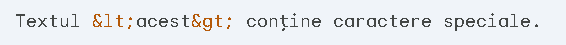
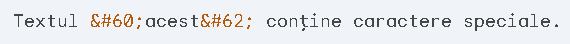

Elementele de escape în HTML Elementele de escape în HTML sunt utilizate pentru a reprezenta caractere speciale sau secvențe de caractere care ar putea fi interpretate greșit de browser ca markup HTML. Acest lucru ajută la prevenirea afișării incorecte a textului și la asigurarea securității codului HTML.
În general, următoarele caractere au nevoie de escape în HTML:
Există două metode principale:
1. Entități HTML:
Fiecare caracter special are o entitate HTML corespunzătoare care poate fi utilizată pentru a-l reprezenta. De exemplu, entitatea HTML pentru < este <, iar entitatea HTML pentru > este >.
Exemplu:
2. Referințe numerice caractere:
Puteți utiliza referințe numerice caractere pentru a reprezenta caractere speciale. Există două tipuri de referințe numerice caractere:
Exemplu:
